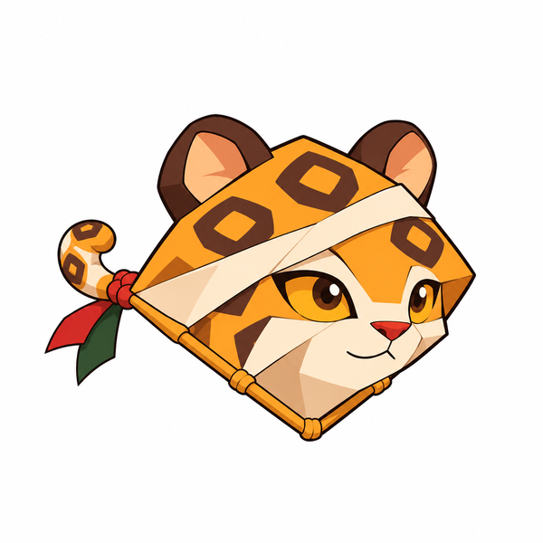
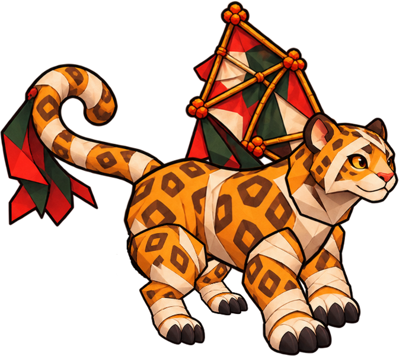
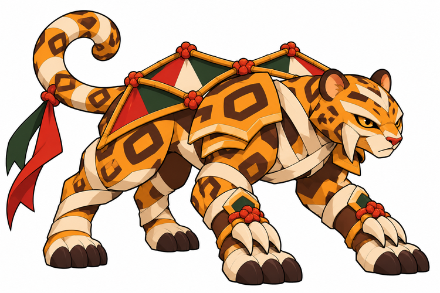
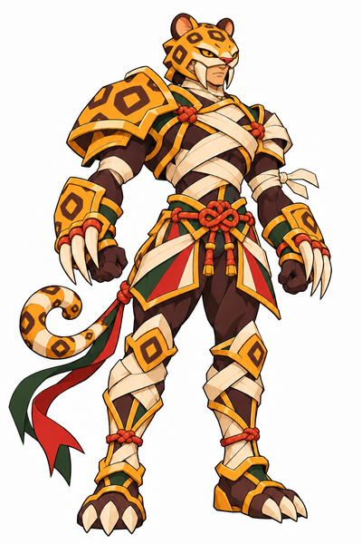

Yaguim · Bebê

Aprende a sustentar a primeira dobra e o primeiro nó.
BriefBebê e jovem aprovados visualmente; criança autoral e adulto aprovado preservados. Nomes novos e ligações são propostas. Sem integração.

Aprende a sustentar a primeira dobra e o primeiro nó.
Brief
Base autoral preservada; classificação de maturidade documental.
Brief
Protege com apoios firmes e aprende a distribuir tensão pelas faixas.
Brief
Reorganiza corpo e construção em cavaleiro; origem e voto indefinidos.
Brief